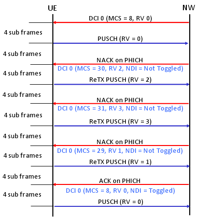
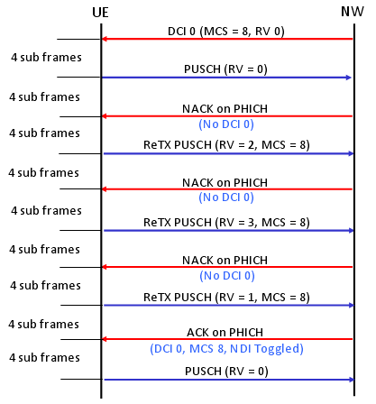

|
LTE Basic Procedure Go Back To Index Home : www.sharetechnote.com |
|
|
HARQ Process
HARQ(Hybrid ARQ) is pretty complicated process and not easy to understand in very detail, but it would be helpful if you have some big picture of this process. (Describing this process in very detail would not be the scope of this section.)
Let's first think about the terminology. What is H-ARQ ? Why it uses the term "Hybrid" ? First think about the term ARQ. ARQ stands for Automatic Repeat Request and you would have heard this a lot if you had experience of studying IP communication (I think you can google a lot of tutorials on this, so I would not explain about what is ARQ here). The "H" in HARQ means "Hybrid" which implies that HARQ is a combination of "Something" and "ARQ". Then what would be the "Something" ? The "Something" is FEC (forward error correction). FEC is also not LTE specific technology and a kind of generic error correction mechanism. So I would like you to google something about FEC.
A little bit different mode of HARQ process is used depending on whether it is for FDD or TDD and whether it is for Uplink and Downlink. But I will talk only about FDD case.
In FDD, we are using 8 HARQ process.
i) For Downlink a) it can use the 8 HARQ processes in any order (Asynchronous Process). b) UE does not know anything about HARQ process information for DL data before it gets it. So Network send these information (Process ID, RV) in PDCCH (DCI, Refer to DCI section of this site). ii) For Uplink
a)it have to use the specific process in a specific subframe (Synchronous Process). UE has to use the same HARQ process number every 8 subframes. b) Since UE have to use specific HARQ process ID at specific subframe, the reciever (eNode B) knows exactly which HARQ process comes when. And eNodeB can also knows about RV because UL Grant (DCI 0) from eNodeB can specify RV using MCS field. c)it has two mode of operation : Adaptive and Non-Adaptive HARQ
Following is an example of Adative UL HARQ Process (Key idea is that Each UL retransmission uses different RV and the RV is determined by DCI 0). 
Following is an example of Non Adative UL HARQ Process (Key idea is that Each UL retransmission uses different RV and the RV is determined by predefined sequence specified in TS36.321 "5.4.2.2 HARQ process"). 
The last but very important question would be "How UE knows if it is supposed to do Adaptive retransmission and Non-Adaptive retransmission ?"
|